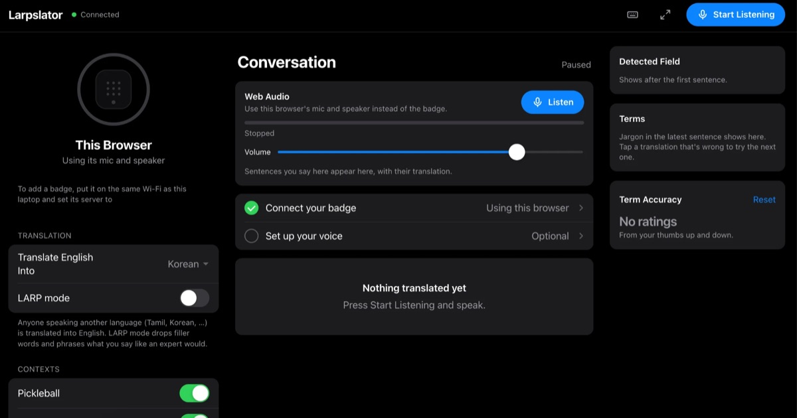

Larpslator
A clip-on badge that translates Korean speech to English live and gets each field's jargon right: a “kernel” in a CS lecture isn't a corn kernel.
Got jargon right in 100% of Korean-to-English test sentences, vs. 93% for a plain translator.
My role: ESP32 badge hardware and the live web dashboard. Helped with the backend, the Korean glossary and ElevenLabs text-to-speech.
Larpslator on GitHub